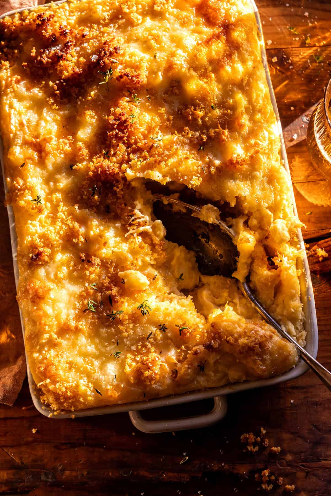

Cheesy Mashed Potato Casserole
Home

Description
The ultimate holiday side dish. These creamy, cheesy potatoes are made with buttery Yukon Golds, mashed with cream cheese, yogurt, simple seasonings, and melty Monterey Jack. They’re not fancy—but they’re absolutely delicious. Finished with crispy garlic crumbs and a topping of Gruyère, this vintage-style casserole is simple, cozy, and always a crowd favorite. My most comforting potato casserole yet!
Ingrdients
- 4 pounds Yukon Gold potatoes, peeled and cubed
- 4 tablespoons salted butter
- 8 ounces cream cheese, at room temperature
- 1/2 cup sour cream or plain greek yogurt
- 1 tablespoon onion powder
- 1 tablespoon garlic powder
- 1 tablespoon fresh thyme leaves
- 1 teaspoon smoked paprika
- 1/4 teaspoon cayenne pepper
- 1-2 cup grated Monterey jack cheese
- sea salt and pepper
- 1 1/2 cups whole milk
- 2 eggs, beaten
- 6 tablespoons salted butter
- 2/3 cup Panko bread crumbs
- 2/3 cup crushed corn flakes
- 2 teaspoons garlic powder
- 2/3 cup grated Gruyère
Steps
- Preheat the oven to 375°F. Butter a 9x13-inch casserole dish.
- In a Dutch oven, cover the potatoes with water and boil over high heat until tender, 10-15 minutes. Drain and add them back into the hot pot. Using a hand mixer or potato masher, mash the hot potatoes with the butter, cream cheese, sour cream, onion powder, garlic powder, thyme, paprika, cayenne, Monterey jack, salt, and pepper. Gradually mix in the milk and eggs, don't over-mix.
- Scrape the potatoes into the buttered casserole dish.
- Make the topping. Melt the butter in a skillet over medium heat until it begins to brown, 2 to 3 minutes. Remove from heat and stir in panko, corn flakes, and garlic. Season with salt and pepper. Sprinkle over the potatoes. Top with grated Gruyère.
- Bake until golden and crisp, 30 to 40 minutes. Top with parsley or thyme. Serve them up and enjoy!